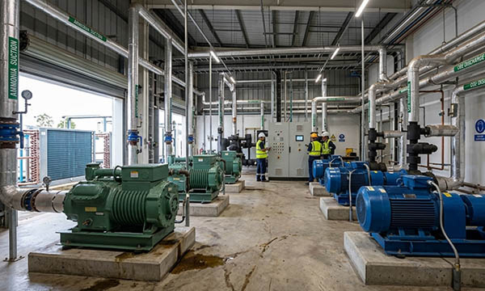

Refrigeration installations are essential for maintaining temperature-sensitive environments in Germany, as well as in France, Italy, Switzerland, the UK, Norway, Austria, Poland, and the Benelux countries. These systems are critical for warehouses, industrial facilities, commercial kitchens, and laboratories, helping protect perishable goods such as food, pharmaceuticals, and chemicals. Properly executed refrigeration installations ensure optimal temperature control, prevent spoilage, and contribute to energy efficiency by optimizing cooling performance and reducing operational costs.
Clear pipe labeling, signage, engraved labels, industrial labels, type plates, and industrial plates are crucial for smooth operation and maintenance. They allow technicians to quickly identify components, pipes, refrigerants, and connections, minimizing errors and supporting safe, efficient workflows.
At SignXpert, we provide high-quality signage, decals, and pipe labeling solutions for refrigeration installations. Our products are customizable, durable, and designed to meet DIN, VDE, CE marking, and European standards, ensuring both compliance and clarity. With fast delivery across Germany and Europe, SignXpert enables efficient project execution for both planned and urgent refrigeration installations.
Refrigeration Installations: Ensuring Temperature Control and Product Quality.
In industries that require strict temperature management — such as food, pharmaceuticals, and chemicals — refrigeration installations are vital for product safety and quality. They help maintain stable temperatures, extend shelf life, reduce waste, and uphold hygiene standards. In commercial settings like supermarkets, restaurants, and cold storage facilities, proper refrigeration allows large quantities of perishable goods to be stored safely without compromising quality.
Well-planned installations also optimize energy usage, helping companies lower operational costs while supporting sustainable practices. By implementing modern refrigeration systems with pipe labeling, signage, and engraved industrial plates, businesses ensure a reliable, energy-efficient solution that meets the highest industry standards across Germany, Austria, Switzerland, France, Italy, the UK, Norway, Poland, and the Benelux countries.
Energy Efficiency and Sustainability in Refrigeration Installations.
Modern refrigeration installations are designed to minimize energy consumption and environmental impact. Advanced cooling systems often incorporate technologies such as smart controls, heat recovery, and optimized refrigeration cycles to reduce energy use while maintaining consistent temperatures.
Installing sustainable refrigeration systems with clear pipe labeling, engraved labels, type plates, and industrial plates allows businesses to meet European standards, DIN, and VDE regulations. These energy-efficient systems not only lower operational costs but also support environmental responsibility, contributing to greener industrial practices and a more sustainable future.
The Importance of Clear Pipe Labeling and Signage.
For safe and efficient refrigeration operations, clear pipe labeling and signage are essential. In complex systems, technicians rely on industrial labels, engraved type plates, and industrial plates to identify pipes, refrigerants, flow directions, and critical components quickly. Proper labeling enhances maintenance efficiency, reduces errors, and ensures safe handling during repairs or inspections.
Signage marking ventilation paths, temperature controls, and service points also improves accessibility for maintenance personnel. By investing in durable, high-visibility pipe labels and industrial signage, companies in Germany and Europe create a well-organized refrigeration environment that supports safe, efficient operation and quick troubleshooting.
Why SignXpert is the Leading Supplier of Refrigeration Signage and Labels.
SignXpert provides a comprehensive range of signs, decals, pipe labeling, engraved labels, type plates, and industrial plates for refrigeration installations across Germany and Europe. Our user-friendly online system allows customers to easily design and order customized labeling for both planned and urgent projects.
Our products are robust, highly visible, and compliant with DIN, VDE, CE marking, and European standards, ensuring long-lasting and reliable identification for all refrigeration system components. Fast delivery ensures projects stay on schedule, and our competitive pricing makes professional refrigeration signage and labeling accessible for businesses of all sizes.
By choosing SignXpert, property managers, facility operators, and refrigeration technicians receive a secure, durable, and cost-effective solution that supports organized, safe, and efficient refrigeration installations across Germany, Austria, Switzerland, France, Italy, the UK, Norway, Poland, and the Benelux countries.